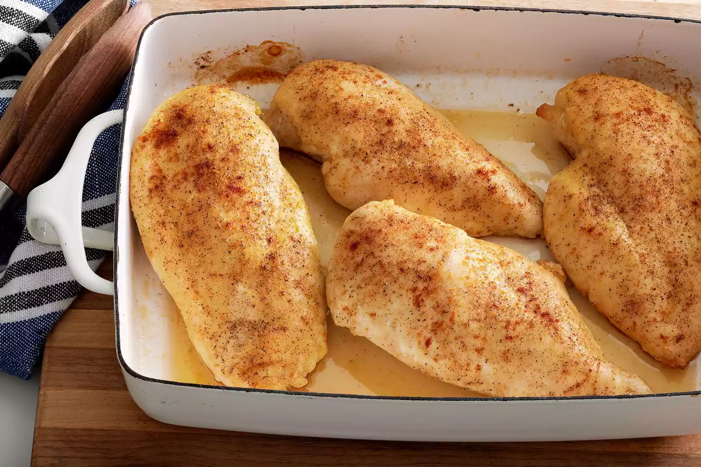

Baked Chicken Breasts

Description
Baked chicken that's tender, juicy, and perfect every time with this simple, 5-ingredient recipe for boneless, skinless chicken breasts. Adding just a bit of chicken broth to those beautiful pan drippings creates a tasty pan sauce that adds extra flavor at the table.
Ingredients
- Chicken Breasts
- Olive Oil
- Salt
- Creole Seasoning
- Chicken Broth
Directions
- Coat chicken breasts with olive oil.
- Sprinle both siides of breasts with salt and creole seasoning.
- Bake in oven for 10mins and then flip and bake for another 15mins
- Pour the chicken broth in the pan used to cook the chicken and scrape any browned bits off of the pan.
- Drizzle chicken broth over the cooked chicken.